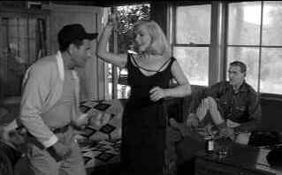

| Misfits, The/ B,B |
| MGM/1961/125/WS 1.66/BW |
Gable, Monroe, Clift, Wallach. Not a bad cache of acting talent. The
Misfits is a complex film, pretty uneven and
talky, but it packs a lot of emotion into the last third. While this is a film about a disappearing way of life, it’s
also about people having to adapt.
Pretty blonde Roslyn is putting the final touches on a Reno divorce. In
the 1950s Reno was the divorce capital of the world. Six weeks residence and a judge granted you
freedom with the same sudden finish of a Brahma bull rodeo ride. Reno was also a bastion for
a dying breed, the cowboy. Gay Langland, an aging cowpoke on the loose knows his way around the
newly freed ladies. When buddy Guido introduces Gay to Roslyn, sparks fly. Guido sets Roslyn up a
his unfinished house in the sticks and Gay, Roslyn, her Reno mentor Isabelle ( All the characters can learn a thing or two from her. It’s a
wonderful moments when she meets her former husband.), and Guido party. Gay and Roslyn get real cozy.
But restlessness sets in and Guido advises Gay about some wild mustangs ripe for hunting. The trio
picks up Perce Howland as to join the mustang expedition, but not before Perce gets to ply the seat
of his pants at a local rodeo. Drink up boys before the raw emotions come to the surface.
 |
| Roslyn swings for Guido and Gay. ©MGM |
Marilyn Monroe is pretty amazing as
Roslyn, innocent, damaged, loving; and yeah, she can move that bottom. No body doubles needed! Clark Gable plays a man his own age. He looks tired at times. Still, in his final film he commands the
screen. A simple man slowly becoming aware of the contradictions in his life. It’s an interesting
portrait. Eli Wallach plays Guido with a hungry stare. His anger is ready to explode at any
moment. Montgomery Clift delivers a Perce whose clock was cleaned by one too many broncos. Thelma Ritter, the experienced divorcee
Isabelle is the perfect survivor.
John Huston directs from an Arthur Miller script. It appears that Miller
culled some interesting rodeo references to Monroe's role as Cheri in Bus Stop. Houston is
a pro. The scenes play out naturally and the mustang hunt is shot and edited with terrific
intensity. Russell Metty’s cinematography is more like a book of perfect still photos. The black
and white vistas highlight the characters. Alex North's jazzy score highlights the action
effectively.
It’s a handsome transfer even though it’s not anamorphic (1.66 doesn’t
suffer much from lack of enhancement.). The image is mostly sharp. Photographic details are
transferred with good depth. Stark black and white contrasts. Very deep blacks. Excellent gray
scale range. Consistently clean elements too. Were US films composed for 1.66 widescreen aspect ratios? Not to my
knowledge. The Misfits is likely composed for 1.85 theatrical presentation. I did not feel
the compositions felt cropped. The mono sound is clean. The music has good range and the dialogue
is clear.

A Star is Born/A,B

Judy Garland is brilliant in the great Hollywood tale of one star on the rise and another
sliding into the abyss. James Mason is wonderful alongside Judy.


Selections from the Feature Archive
include articles on Akira Kurosawa, Frank
Darabont, Blonde Bimbos, Hollywood Street Gangs, or Vietnam: The
Hollywood Pariah, and many more....
Roman
Holiday
Join the editor and his family on a trip through Roman movie sites in this unusual feature.

Screen legend Gary Cooper
won two Academy Awards© as Best Actor during a career that included 114 Hollywood films. Click on
his image for a bio and poster images.
Sophia mi Amore
Sophia mi Amore:
That's what I thought the first time I saw one of the screen's sexiest women in Boy on a Dolphin.
Maybe not in those words, but you get the idea. For a look a Sophia's career from one perspective,
click on her image. Includes a selection of posters from her movies.